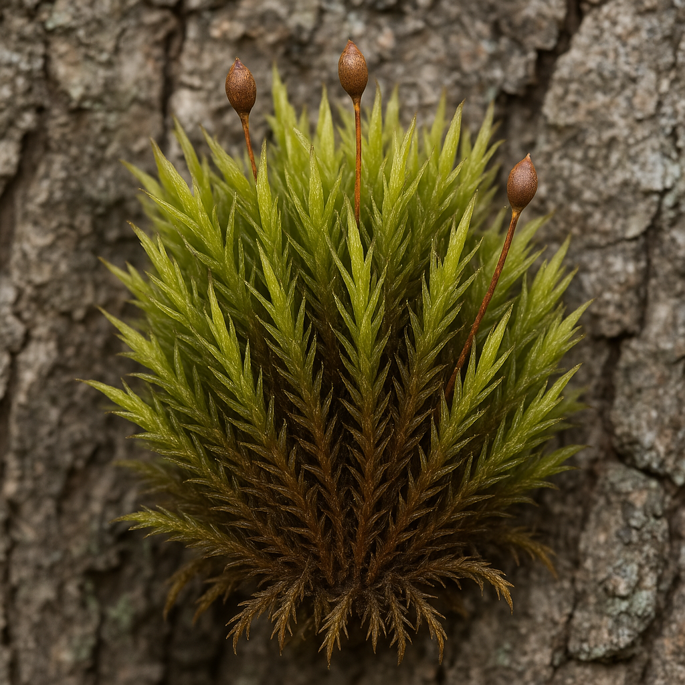

Drummondiaceae
Drummondia Moss Family
Drummondiaceae is a small family containing the single genus Drummondia. These mosses typically grow as dense cushions or tufts on tree bark (epiphytic), particularly hardwoods. They are characterized by lanceolate leaves with a strong costa, and erect capsules on short setae with a highly reduced peristome.
Overview
The Drummondiaceae family, solely represented by the genus Drummondia, consists of distinctive epiphytic mosses. Unlike many potentially related families that favour rock substrates (like Grimmiaceae), Drummondia species are typically found forming neat, dense, often rounded cushions or tufts on the bark of deciduous trees, especially in temperate forests.
These mosses are perennial, maintaining their presence year-round. The family has a widespread distribution across North America, Europe, Asia, and Africa. Their preference for bark habitats makes them part of the corticolous bryophyte community, contributing to biodiversity on tree surfaces.
The taxonomic position of Drummondiaceae has been debated. Morphological features, such as the rudimentary peristome and epiphytic habit, distinguish it from families like Grimmiaceae. Molecular studies often place it near or within the Orthotrichales, suggesting a closer relationship to families like Orthotrichaceae, which also contains many epiphytes. However, some classifications retain links to the Grimmiales.
Quick Facts
- Scientific Name: Drummondiaceae
- Common Name: Drummondia Moss Family
- Number of Genera: 1 (Drummondia)
- Number of Species: Approximately 2-3
- Distribution: North America, Europe, Asia, Africa.
- Evolutionary Group: Bryophytes - Bryopsida (True Mosses) - Order uncertain (Orthotrichales / Grimmiales)
Key Characteristics
Drummondiaceae mosses are defined by their epiphytic habit and specific morphological traits.
Gametophyte Form and Habit
The gametophyte generation forms conspicuous cushions:
- Habit: Plants grow in dense, often rounded tufts or cushions, firmly attached to bark.
- Size: Stems typically erect, 1-3 cm high.
- Color: Often yellowish-green to brownish-green or dark green.
- Stems: Erect, sparsely branched. Central strand usually present. Rhizoids typically restricted to the base.
Leaves (Phyllids)
Leaves are typically lanceolate with a strong costa:
- Arrangement & Shape: Usually crowded, erect-spreading when moist, becoming strongly appressed and sometimes slightly contorted or twisted around the stem when dry. Shape is typically lanceolate to ovate-lanceolate, gradually tapering to an acute apex.
- Costa (Midrib): Strong, single, usually ending just below the apex (subpercurrent) or reaching the apex (percurrent).
- Margins: Usually plane or narrowly recurved, typically entire (smooth).
- Cells: Upper laminal cells are small, dense, thick-walled, roughly isodiametric (quadrate) to shortly rectangular, and smooth or sometimes slightly bulging (mammillose). Basal cells near the costa may be longer and more rectangular.
Reproductive Structures
- Sexual Condition: Typically autoicous (antheridia and archegonia on the same plant but in separate clusters).
- Archegonia (female organs) are terminal on main stems or branches, surrounded by perichaetial leaves similar to the vegetative leaves.
- Antheridia (male organs) are in bud-like clusters (perigonia) located below the perichaetia on the same stems.
Sporophyte
The sporophyte has a characteristic structure with a reduced peristome:
- Seta: Short (usually 1-3 mm) but distinct, straight, smooth.
- Capsule: Erect and symmetric, shape typically ovate to oblong-cylindrical, smooth-walled. Urn (main body of capsule) is distinct from the neck (base).
- Operculum: Typically conic-rostrate (with a distinct beak).
- Peristome: Highly characteristic – extremely reduced or rudimentary. Often consists of only a low membrane or 16 very short, fragile, irregular teeth, sometimes appearing absent altogether. Does not have the complex structure seen in related families like Orthotrichaceae or Grimmiaceae.
- Calyptra: Typically mitrate (conical, unlobed, covering only the operculum) or sometimes cucullate (hood-shaped, split on one side), often hairy in D. prorepens, smooth in others.
Spores
Spores are typically spherical, relatively large, and often appear greenish and papillose.
Chemical Characteristics
No specific chemical characteristics are widely noted beyond those typical for epiphytic Bryopsida mosses.
Field Identification
Identifying Drummondiaceae involves recognizing its epiphytic cushion habit combined with specific leaf and sporophyte features.
Primary Identification Features (Hand Lens Level)
- Habitat: Primarily found growing on the bark of trees, especially hardwoods, forming distinct cushions.
- Growth Form: Dense, rounded tufts or cushions, often yellowish-green to brownish.
- Dry vs. Moist Appearance: Leaves are tightly appressed when dry, making stems look wiry or julaceous; they become erect-spreading when moist.
- Sporophyte Position & Shape: Look for erect, symmetrical, ovate-cylindrical capsules borne on short, straight setae, emergent from the cushion.
- Rudimentary Peristome: The most definitive feature (though hard to see) – the capsule mouth lacks the well-developed teeth seen in Orthotrichum or Ulota. It may appear smooth-rimmed or have only tiny vestiges.
Secondary Identification Features
- Leaf Shape: Lanceolate leaves tapering to a point.
- Strong Costa: Visible with a hand lens.
- Hairy Calyptra: In D. prorepens, the presence of hairs on the calyptra (if present) can be a helpful clue.
Seasonal Identification Tips
- Year-Round: Gametophytes forming cushions are perennial and identifiable by habitat and dry/moist leaf posture.
- Spring / Summer: Best time to find mature sporophytes. The short setae and erect capsules are key features.
Common Confusion Points
Several other epiphytic mosses form cushions:
- Orthotrichaceae (Orthotrichum, Ulota): Often grow in similar habitats and forms. Distinguished by their well-developed double peristomes (though sometimes reduced), often ribbed capsules (especially Ulota), and frequently hairy, campanulate (bell-shaped) calyptrae. Ulota leaves are often strongly crisped/curled when dry.
- Grimmiaceae (Grimmia): Mostly on rock, but rare epiphytic species exist. Usually differ in leaf shape, often having hyaline hair points, and possess different peristome structures.
- Ptychomitriaceae (Ptychomitrium): Sometimes epiphytic. Leaves strongly crisped when dry, capsules often ribbed, peristome teeth long and slender.
- Leskeaceae / Leucodontaceae: Other epiphytes, but often creeping or pendent rather than forming dense erect cushions, and possess different leaf cell shapes and sporophyte features.
Field Guide Quick Reference
Look For:
- Habitat: Tree bark (epiphytic)
- Dense cushions/tufts
- Leaves appressed dry, erect-spreading moist
- Lanceolate leaves, strong costa
- Short seta, erect symmetrical capsule
- Rudimentary/absent peristome
Key Distinctions:
- vs. Orthotrichaceae: Peristome (rudimentary vs. well-developed double), capsule ribbing (absent vs. often present).
- vs. Ulota: Leaf posture dry (appressed vs. crisped), peristome.
- vs. Grimmia: Habitat (bark vs. mostly rock), hyaline tips (absent vs. often present).
Notable Examples
The family contains the single genus Drummondia.

Drummondia prorepens
(Drummond's Moss)
The most common and widespread species in the genus, found in eastern North America, Europe, and Asia. Forms characteristic dense, yellowish-green to brownish cushions on hardwood bark. Notable for its often hairy calyptra (though hairs can wear off) and extremely reduced peristome. Leaves are lanceolate and appressed when dry.
Phylogeny and Classification
Drummondiaceae is placed within the class Bryopsida. Its phylogenetic position relative to other moss families has been debated, reflecting its somewhat intermediate characteristics.
Traditionally, it was sometimes associated with the Grimmiales due to features like its thick-walled leaf cells and relatively simple capsule structure (though lacking the typical Grimmiales peristome). However, its epiphytic habit and certain sporophyte features (like the sometimes hairy calyptra) align more closely with the Orthotrichales.
Most modern molecular studies support a placement within or very close to the Orthotrichales, suggesting a relationship with families like Orthotrichaceae. The highly reduced peristome is interpreted as a derived characteristic within this broader group, rather than an ancestral state linking it to families with simpler peristomes like Grimmiaceae.
Position in Plant Phylogeny
- Kingdom: Plantae
- Clade: Embryophyta (Land Plants)
- Division: Bryophyta (Mosses)
- Class: Bryopsida
- Order: Orthotrichales (most likely) / Grimmiales
- Family: Drummondiaceae
Evolutionary Significance
Drummondiaceae, though small, is evolutionarily interesting:
- Epiphytic Adaptation: Represents adaptation to a bark substrate, potentially diverging from rock-dwelling ancestors.
- Peristome Reduction: Shows an extreme case of peristome reduction or loss, providing insights into the evolutionary pathways of spore dispersal mechanisms.
- Phylogenetic Link: Its position helps bridge understanding between groups like Orthotrichales and potentially Grimmiales, depending on the phylogenetic reconstruction.
- Biogeography: Its widespread but somewhat disjunct distribution across continents reflects historical climate changes and dispersal events.